Профессия коммерческого директора (CCO) требует глубокого понимания стратегического планирования, управления продажами и разработки эффективных коммерческих стратегий. Чтобы повысить квалификацию и освоить ключевые навыки стратегического и финансового менеджмента, многие выбирают профессиональную переподготовку с дистанционным обучением. Такой формат позволяет совмещать обучение с работой, осваивая аспекты коммерческой деятельности в удобном графике. Онлайн курсы и дистанционные образовательные программы включают изучение ключевых аспектов управления, стратегию маркетинга и методы повышения эффективности бизнеса. По завершении обучения слушатели получают диплом установленного образца, подтверждающий новую квалификацию. Мы составили рейтинг лучших программ, где коммерческий директор сможет развить профессиональные навыки, овладеть инструментами стратегического планирования и повысить эффективность управления продажами.
Информация обновлена:
ТОП онлайн-курсов обучения для коммерческих директоров и менеджеров
- 🏆 Коммерческий директор — Академия Eduson (по промокоду kursy скидка 🎁 5%)
- 🏆 Коммерческий директор — Московская Бизнес Академия (по промокоду onlinekursy скидка 🎁 10%)
- 🏆 Коммерческий директор — Русская Школа Управления
- Коммерческий директор (CCO). Профессиональная переподготовка — Moscow Business School
- Коммерческий директор в эпоху изменений: от теории к практике — Moscow Business School
- Коммерческий директор — MITM
- Коммерческий директор — Skillbox
- Финансовый директор — SF Education (по промокоду onlinekursy скидка 🎁 15%)
- Директор по экономике и финансам — Академия Eduson (по промокоду kursy скидка 🎁 5%)
- Директор по финансам (CFO, Chief Financial Officer) — City Business School
- Финансовый директор – Нетология
- Коммерческий директор — ИПО
- Профессиональная переподготовка на коммерческого директора — Учебный центр «НЦПО»
- Директор по стратегическому развитию (620 часов) — АНО «НИИДПО»
- Руководитель отдела продаж — Академия Eduson (по промокоду kursy скидка 🎁 5%)
- Курс для топ-менеджеров — SF Education (по промокоду onlinekursy скидка 🎁 15%)
Бесплатные курсы по обучению на Коммерческого директора
- Бесплатный мини-курс «Профессия Коммерческий директор» – Eduson Academy
- Финансовый менеджмент: увеличиваем прибыль и получаем премию – Skillbox
Отличительные преимущества каждой дистанционной программы обучения для коммерческих диреткоров и менеджеров
| № | Название курса и школа | Отличительные преимущества | |
|---|---|---|---|
| 🥇 | Коммерческий директор — Академия Eduson | Сильный преподавательский состав (Адизес, Поташев, Стёртэвант), диплом гос. образца, пожизненный доступ к материалам, тренажёры и кейсы, карьерная поддержка. | Перейти |
| 🥈 | Коммерческий директор — Московская Бизнес Академия | Диплом гос. и международного образца, аккредитация международных организаций, гибкий график до 36 мес. рассрочки, модуль по ИИ, карьерное сопровождение. | Перейти |
| 🥉 | Коммерческий директор — Русская Школа Управления | 70% практики, гибкий индивидуальный график, диплом ФРДО, 6500+ выпускников, высокий рейтинг 4.7, доступ к базе знаний навсегда. | Перейти |
| 4 | Коммерческий директор (CCO). Профессиональная переподготовка — Moscow Business School | Диплом гос. и Diploma Supplement, очно-дистанционный формат, безлимитный доступ к курсам MBS, членство в бизнес-клубе выпускников. | Перейти |
| 5 | Коммерческий директор в эпоху изменений: от теории к практике — Moscow Business School | Интенсивный 3-дневный курс, применение Process Mining и ИИ, очно-дистанционный формат, акцент на реальные кейсы и визуализацию данных. | Перейти |
| 6 | Коммерческий директор — Московский институт технологий и управления | Официальный диплом 646 часов, налоговый вычет 13%, возврат средств при отказе, рассрочка без процентов, интенсивный формат 3 мес. | Перейти |
| 7 | Коммерческий директор — Skillbox | Диагностика навыков перед стартом, практико-ориентированный курс, 90% довольных выпускников, гарантия возврата при отсутствии трудоустройства. | Перейти |
| 8 | Финансовый директор — SF Education | Международная аккредитация FMI, диплом ЕС, 320+ часов практики, 52 кейса, пожизненный доступ к материалам, карьерный центр и портфолио проектов. | Перейти |
| 9 | Директор по экономике и финансам — Академия Eduson | Два документа: диплом и удостоверение, преподаватели из ВШЭ и Adizes Institute, акцент на финансовое моделирование и стратегию развития бизнеса. | Перейти |
| 10 | Директор по финансам (CFO, Chief Financial Officer) — City Business School | Международный диплом, модуль по ИИ в финансах, дашборды и управленческие отчёты, гибкий тариф от 4 до 6 мес., доступ к сообществу выпускников. | Перейти |
| 11 | Финансовый директор — Нетология | Менторские сессии от финансовых директоров, 20+ лет опыта преподавателей, 4 мес. обучения, акцент на Power BI и стратегическое управление финансами. | Перейти |
| 12 | Коммерческий директор — ИПО | Диплом гос. образца, доступ к библиотеке Юрайт, рейтинг 4.8, гибкий темп прохождения, карьерная консультация и ФИС-ФРДО регистрация. | Перейти |
| 13 | Профессиональная переподготовка на коммерческого директора — Учебный центр «НЦПО» | Самая доступная цена (от 14 400 ₽), диплом ФРДО, обучение по договору, круглосуточный доступ к платформе, беспроцентная рассрочка до 12 мес. | Перейти |
| 14 | Директор по стратегическому развитию (620 часов) — АНО «НИИДПО» | Курс по стратегическому управлению, диплом гос. образца, сертификат компетенций, 23 недели, удобный онлайн-график, реальные кейсы и вебинары. | Перейти |
| 15 | Руководитель отдела продаж — Академия Eduson | Преподаватели Harvard и Forbes, тренажёры, интервью с экспертами, курс длится 3 мес., диплом гос. образца, пожизненный онлайн-доступ. | Перейти |
| 16 | Курс для топ-менеджеров — SF Education | Преподаватель Goldman Sachs, быстрый курс (1 мес.), сертификат установленного образца, 65% скидка, гибкий формат и пожизненный доступ к материалам. | Перейти |
1. 🏆 Коммерческий директор — Академия Eduson
- ✅ Официальный сайт: eduson.academy
- 💸 Цена обучения: от 120 000 ₽ (скидка 60%).
- 💳 Рассрочка: от 10 000 ₽/мес до 12 месяцев без переплат, оплата доступна онлайн.
- 📚 Формат: дистанционный формат — видеолекции, бизнес-кейсы, тесты, онлайн-тренажёры, домашние задания и дипломный проект.
- ⏳ Продолжительность: 4 месяца.
- 📜 Документ: удостоверение о повышении квалификации государственного образца.
- 📝 Трудоустройство: консультации по карьерному развитию и помощь в применении профессиональных навыков.
- 🔷 Для кого подходит курс: начинающим и действующим коммерческим директорам, специалистам по продажам, маркетологам и менеджерам среднего звена, стремящимся повысить квалификацию.
Особенности:
Программа создана для тех, кто хочет освоить ключевые аспекты коммерческой деятельности и повысить эффективность бизнеса в дистанционном формате. Обучение проходит с опытными преподавателями и включает разработку коммерческой стратегии, управление продажами и формирование стратегии маркетинга. Студенты изучают аспекты коммерческого планирования и приобретают навыки стратегического управления. Благодаря гибкому графику обучения можно совмещать профессиональную деятельность и дистанционное образование. Материалы курса доступны онлайн навсегда, что позволяет возвращаться к ним после завершения программы. Слушатели проходят обучение на современных образовательных платформах, используя актуальные методики и инструменты менеджмента.
Чему учатся студенты:
- Разрабатывать стратегию компании и управлять процессами продаж
- Создавать и мотивировать эффективные команды
- Использовать KPI для повышения эффективности бизнеса
- Проводить финансовое планирование и анализировать отчётность
- Оптимизировать бизнес-процессы и управлять дебиторской задолженностью
- Формировать стратегию маркетинга и работать с ключевыми клиентами
- Управлять закупками, логистикой и корпоративными финансами
Преподаватели:
- Ицхак Адизес — основатель Института Адизеса, входит в топ-10 консалтинговых компаний мира
- Леонид Осокин — генеральный директор Osokin-Consulting
- Максим Поташев — глава RP Consulting, магистр игры «Что? Где? Когда?»
- Джон Стёртэвант — преподаватель Гарвардской школы бизнеса
- Чарльз Крэйвер — профессор Университета Джорджа Вашингтона
- Светлана Зубова — CEO digital-агентства E-COMM.GURU
- Артемий Гершвальд — эксперт по построению отделов продаж и запуску стартапов
- Оксана Бондаренко — экс-финансовый директор крупных компаний
Преимущества:
- Современные дистанционные форматы обучения, доступные онлайн
- Практические кейсы и тренажёры, приближённые к реальной работе
- Официальный документ о повышении квалификации по окончании курса
- Возможность совмещать обучение с работой благодаря гибкому графику
- Поддержка куратора и экспертная обратная связь в течение года
- Доступ к обновлениям и материалам курса без ограничения по времени
- Бонусная скидка при покупке дополнительного курса «Нейросети на практике»
- Рейтинг выпускников 4.8 из 5 по отзывам слушателей
Отзывы учеников:
Студенты отмечают практическую пользу дистанционного обучения, доступность преподавателей и понятную структуру программы. Многие подчеркивают, что курс помог систематизировать знания, повысить профессиональную квалификацию и уверенность в управлении коммерческой службой. Среди плюсов — гибкий график, современные инструменты обучения и реальные кейсы, которые можно применять в работе сразу после прохождения курса.
Перейти на официальный сайт курса2. 🏆 Коммерческий директор — Московская Бизнес Академия
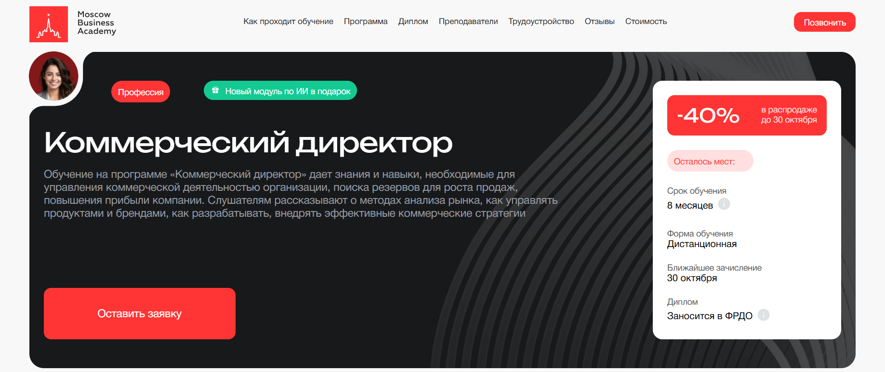- ✅ Официальный сайт: moscow.mba
- 💸 Цена обучения: от 178 800 ₽ со скидкой до 40%.
- 💳 Рассрочка: от 7 450 ₽/мес до 36 месяцев без переплат, первый платеж через месяц.
- 📚 Формат: дистанционный формат обучения, включает видеолекции, практические задания, тесты и итоговый проект.
- ⏳ Продолжительность: 8 месяцев.
- 📜 Документ: диплом о профессиональной переподготовке государственного образца, заносится в ФРДО.
- 📝 Трудоустройство: помощь в составлении резюме, подготовке к собеседованиям и поиске вакансий.
- 🔷 Для кого подходит курс: менеджерам по продажам, предпринимателям и руководителям, стремящимся повысить квалификацию и развить управленческие компетенции.
Особенности:
Обучение проводится в дистанционном формате, что позволяет совмещать обучение с работой и личными делами. Слушатели получают доступ к современным образовательным платформам и учебным материалам онлайн. Программа охватывает ключевые аспекты коммерческой деятельности, включая разработку стратегий продаж и стратегическое планирование. По завершению курса студенты получают официальный диплом и возможность продолжить обучение в дополнительных модулях, включая основы работы с искусственным интеллектом. Формат курса удобен для тех, кто ценит гибкий график обучения и стремится повысить профессиональные навыки без отрыва от текущей деятельности. Академия аккредитована в России и международных организациях, что подтверждает высокое качество образовательных программ.
Чему учатся студенты:
- Разрабатывать и внедрять коммерческую стратегию компании
- Анализировать рынок и показатели эффективности бизнеса
- Управлять продажами и отделами маркетинга
- Осваивать методы эффективного планирования и финансового анализа
- Повышать мотивацию сотрудников и формировать эффективные команды
- Применять современные инструменты: CRM, маркетинговые воронки, диаграммы Ганта и MVP-подход
Преподаватели:
- Ицхак Пинтосевич — эксперт по личностному росту, автор 15 книг, профессиональный бизнес-тренер.
- Ангелина Шам — кандидат наук, корпоративный бизнес-психолог, автор книг по коммуникации и коучингу.
- Мария Егиазарова — выпускник МГУ, психолог, бизнес-спикер, эксперт по социальной психологии.
Преимущества:
- Дистанционные курсы доступны онлайн из любой точки мира
- Возможность совмещать обучение с основной работой
- Программа охватывает все ключевые аспекты коммерческой деятельности
- Диплом международного образца и государственная лицензия
- Современные форматы обучения и интерактивные практические задания
- Персональное сопровождение кураторов и карьерных экспертов
- Гибкий график обучения и доступ к материалам после завершения программы
Отзывы учеников:
Выпускники Московской Бизнес Академии отмечают практическую направленность курса, доступную подачу материала и профессионализм преподавателей. Многие подчеркивают, что обучение помогает повысить квалификацию, освоить современные методы управления и быстро применить полученные знания в работе. Также студенты положительно оценивают удобный дистанционный формат и помощь в трудоустройстве после окончания обучения.
Перейти на официальный сайт курса3. 🏆 Коммерческий директор — Русская Школа Управления
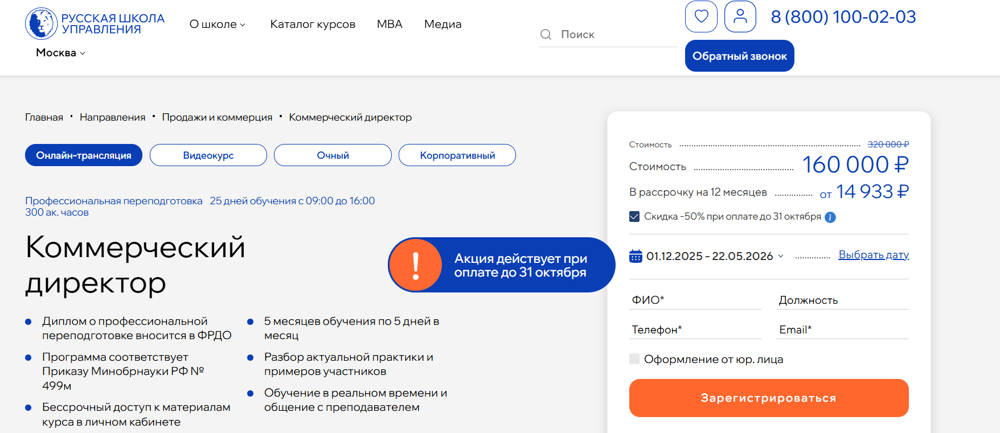- ✅ Официальный сайт: uprav.ru
- 💸 Цена обучения: от 160 000 ₽ до 320 000 ₽ в зависимости от формата.
- 💳 Рассрочка: от 14 933 ₽/мес до 12 месяцев без переплаты.
- 📚 Формат: дистанционный формат, онлайн-трансляции и видеокурс с обратной связью, тестами, практическими заданиями и доступом к записям занятий.
- ⏳ Продолжительность: 5 месяцев обучения по 5 дней в месяц (300 академических часов).
- 📜 Документ: диплом о профессиональной переподготовке установленного государственного образца, данные вносятся в ФРДО.
- 📝 Трудоустройство: выпускники повышают квалификацию и продвигаются на управленческие позиции, открывая новые карьерные возможности.
- 🔷 Для кого подходит курс: для руководителей отделов продаж, специалистов по маркетингу, менеджеров среднего звена и предпринимателей, желающих повысить эффективность бизнеса.
Особенности:
Обучение проводится с применением современных дистанционных образовательных технологий и гибкого графика обучения. Участники получают бессрочный доступ к учебным материалам и базе знаний. Программа охватывает ключевые аспекты коммерческой деятельности, развитие управленческих компетенций и навыков стратегического планирования. В процессе обучения студенты осваивают методы анализа рынка, разработки стратегий продаж и финансового планирования. Курс помогает сформировать практические навыки для решения бизнес-задач и эффективного управления командой. После успешного завершения программы слушатели получают официальный диплом, подтверждающий профессиональную переподготовку. Гибкий формат позволяет совмещать обучение с работой без потери качества усвоения материала.
Чему учатся студенты:
- Проводить рыночный анализ и разрабатывать стратегию маркетинга
- Управлять продажами, CRM-системами и клиентской базой
- Формировать коммерческую стратегию компании и систему мотивации персонала
- Планировать ассортимент, управлять ценообразованием и продвижением на маркетплейсах
- Проводить переговоры и управлять ключевыми клиентами
- Овладевать методами стратегического планирования и финансового менеджмента
- Разрабатывать и внедрять эффективные стратегии продаж
Преподаватели:
- Стерхова Светлана Александровна — к.э.н., доцент РАНХиГС, эксперт в области управления инновационными проектами.
- Марков Евгений Эдуардович — бизнес-тренер, консультант по построению системы продаж и деловым переговорам.
- Васильева Елена Анатольевна — бизнес-консультант, психолог, специалист по организационному развитию и управленческим технологиям.
- Горбачев Максим Николаевич — эксперт по B2B-продажам, совладелец ИТ-сервиса автоматизации продаж, реализовал 100+ успешных проектов.
Преимущества:
- Современные дистанционные курсы с доступом онлайн в любое время
- Возможность совмещать обучение с профессиональной деятельностью
- Официальный диплом государственного образца
- Практическая направленность — 70% практики и 30% теории
- Обучение проводят опытные специалисты-практики
- Индивидуальный график обучения для каждого участника
- База знаний и инструменты для решения бизнес-задач в подарок
- Высокий рейтинг курса — 4.7, прошли более 6500 слушателей
Отзывы учеников:
Выпускники отмечают высокий уровень преподавателей, актуальность материала и возможность применять знания на практике уже во время обучения. Часто подчеркивают удобный формат дистанционного образования, профессионализм кураторов и гибкий график. Многие слушатели сообщают, что курс помог повысить квалификацию, выстроить эффективные стратегии продаж и увеличить результаты своей компании.
Перейти на официальный сайт курса4. Коммерческий директор (CCO). Профессиональная переподготовка — Moscow Business School
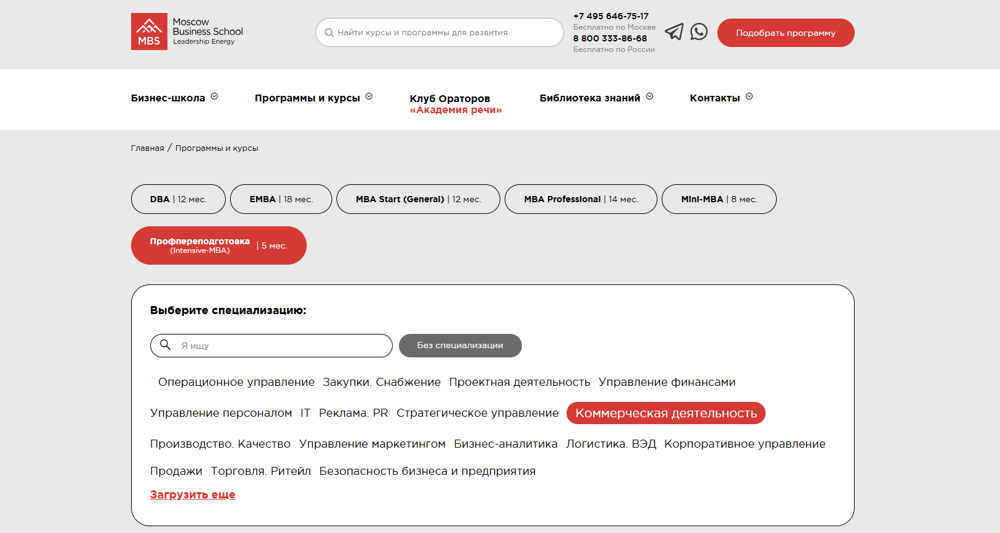- ✅ Официальный сайт: mbschool.ru
- 💸 Цена обучения: 139 000 ₽ (при оплате онлайн в течение 3 дней — скидка 10%).
- 💳 Рассрочка: доступна на 24 месяца, ежемесячный платеж от 5 792 ₽.
- 📚 Формат: дистанционный формат с возможностью очного участия. В программу входят видеолекции, вебинары, практические кейсы, тесты и консультации с кураторами.
- ⏳ Продолжительность: 5 месяцев.
- 📜 Документ: диплом о профессиональной переподготовке государственного образца и Diploma Supplement.
- 📝 Трудоустройство: помощь в карьерном консультировании и рекомендации по трудоустройству после успешного завершения программы.
- 🔷 Для кого подходит курс: для руководителей отделов продаж, предпринимателей, коммерческих директоров и специалистов, желающих повысить квалификацию и получить новую профессию в сфере бизнеса.
Особенности:
Программа сочетает дистанционное обучение с практическими занятиями, что позволяет совмещать обучение с работой. Студенты осваивают ключевые аспекты коммерческой деятельности, управление продажами и разработку эффективных стратегий. Форматы обучения разработаны с учетом современных образовательных стандартов и гибкого графика. Учебный процесс сопровождают опытные кураторы и преподаватели-практики. Все материалы доступны онлайн, что делает дистанционное образование удобным и результативным. После окончания курса выпускники получают официальные дипломы, подтверждающие новую квалификацию и открывающие путь к карьерному росту.
Чему учатся студенты:
- Разрабатывать коммерческую стратегию и стратегию маркетинга;
- Управлять продажами и отделом продаж;
- Проводить анализ финансовых показателей и оценивать эффективность бизнеса;
- Осваивать методы стратегического планирования и финансового менеджмента;
- Совершенствовать управленческие навыки и методы повышения эффективности команды;
- Применять полученные знания в реальных проектах и кейсах.
Преподаватели:
- Тихонов Роман Витальевич — эксперт в интернет-маркетинге, поисковой оптимизации и контекстной рекламе, бизнес-тренер и консультант.
- Макарова Екатерина Игоревна — эксперт по связям с общественностью, журналист, бизнес-тренер, член Российской ассоциации по связям с общественностью.
Преимущества:
- Дистанционный формат обучения с очной опцией;
- Доступ к электронной библиотеке и базе знаний MBS;
- Поддержка кураторов и преподавателей на каждом этапе обучения;
- Безлимитный доступ ко всем дистанционным курсам школы;
- Возможность совмещать обучение с работой благодаря гибкому графику;
- Официальный диплом установленного образца;
- Карьерное консультирование и помощь в трудоустройстве;
- Доступ к закрытому бизнес-клубу выпускников.
Отзывы учеников:
Студенты отмечают практическую направленность программы, высокий уровень преподавателей и возможность совмещать обучение с основной работой. Многие выпускники подчеркивают, что после завершения обучения смогли повысить квалификацию и занять должность коммерческого директора или руководителя отдела продаж. Также положительно оцениваются онлайн-курсы, удобный формат и доступность материалов.
Перейти на официальный сайт курса5. Коммерческий директор в эпоху изменений: от теории к практике — Moscow Business School
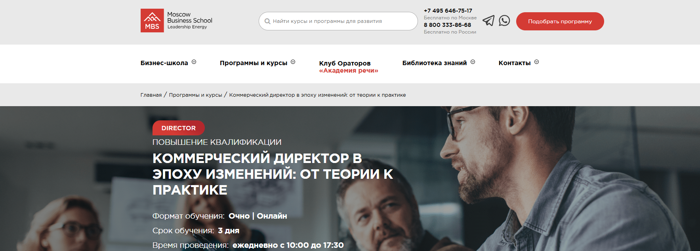- ✅ Официальный сайт: mbschool.ru
- 💸 Цена: 55 900 ₽
- 💳 Рассрочка: доступна при оформлении заявки онлайн от 2 329 ₽/мес
- 📚 Формат: очные и дистанционные занятия, видеолекции, практические кейсы, работа с реальными данными, интерактивные задания
- ⏳ Продолжительность: 3 дня (с 10:00 до 17:30)
- 📜 Документ: удостоверение о повышении квалификации или сертификат Moscow Business School
- 📝 Трудоустройство: выпускники курса часто получают повышение и новые управленческие должности
- 🔷 Для кого подходит курс: для коммерческих директоров, руководителей отделов продаж, маркетинга и закупок, менеджеров среднего и высшего звена
Особенности:
Программа направлена на развитие ключевых управленческих и профессиональных навыков для успешного ведения коммерческой деятельности. Слушатели изучают аспекты коммерческой стратегии, методы управления продажами и маркетингом, учатся использовать дистанционный формат и цифровые инструменты анализа данных. Курс сочетает очные занятия с дистанционным обучением, что позволяет совмещать обучение с рабочим графиком. Программа включает изучение методов Process Mining, применения ИИ и визуализации ключевых показателей для собственников. Обучение проводится с использованием современных образовательных платформ, что обеспечивает удобный формат и доступ к материалам онлайн. После завершения обучения участники получают официальные документы, подтверждающие квалификацию. Материалы курса доступны слушателям на протяжении всего процесса обучения.
Чему учатся студенты:
- Разрабатывать и реализовывать коммерческую стратегию компании
- Осваивать эффективные стратегии продаж и управления отделами
- Использовать анализ данных для принятия управленческих решений
- Применять инструменты финансового планирования и управления прибылью
- Внедрять современные методы управления коммерческой службой
- Организовывать работу команды и отделов маркетинга
- Формировать ключевые навыки стратегического планирования и оптимизации процессов
Преподаватели:
- Левяков Олег Михайлович — кандидат экономических наук, эксперт по операционному менеджменту, ВЭД, логистике и управлению качеством
- Романчук Виталий Александрович — доктор технических наук, профессор, специалист в области нейропроцессорных вычислительных систем
Преимущества:
- Сочетание очного и дистанционного формата обучения
- Доступ к учебным материалам и практическим кейсам онлайн
- Получение официального удостоверения о повышении квалификации
- Обучение у экспертов-практиков с опытом более 5 лет
- Программа направлена на повышение эффективности бизнеса и рост прибыли
- Гибкие форматы обучения, позволяющие совмещать с работой
- Высокий процент выпускников, получающих повышение квалификации и карьерный рост
- Материалы и консультации доступны в дистанционном формате
Отзывы учеников:
Студенты Moscow Business School отмечают практическую направленность занятий, профессионализм преподавателей и четкую организацию обучения. Часто подчеркивают пользу от реальных кейсов, комфортный темп занятий и возможность повысить квалификацию без отрыва от работы. Многие выпускники сообщают о карьерном росте и улучшении эффективности управления коммерческой службой.
Перейти на официальный сайт курса6. Коммерческий директор — Московский институт технологий и управления
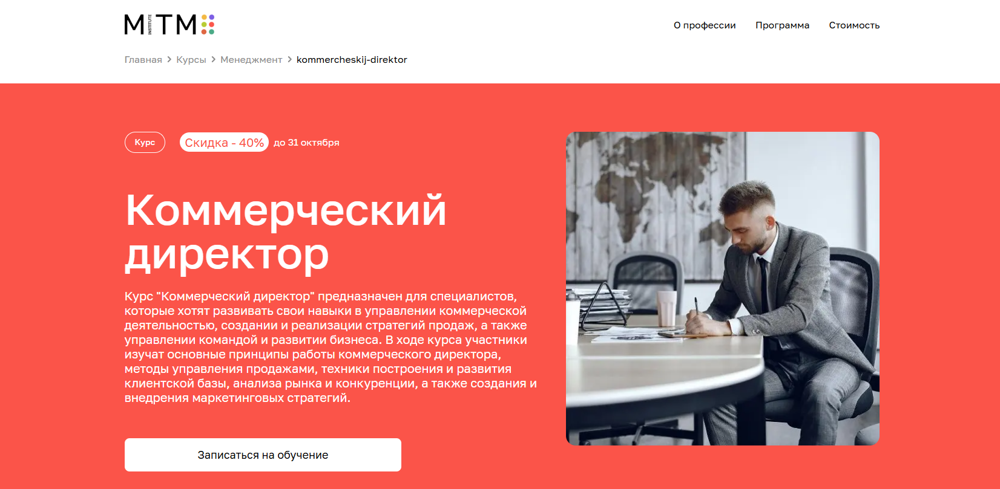
- ✅ Официальный сайт: mitm.institute
- 💸 Цена обучения: 178 800 ₽ (скидка 40%).
- 💳 Рассрочка: от 7 450 ₽/мес беспроцентная на 24 месяца от «Тинькофф Банка».
- 📚 Формат: дистанционный формат — онлайн лекции, тесты, практические задания и поддержка кураторов 24/7.
- ⏳ Продолжительность: 6 месяцев, возможен интенсивный график — 3 месяца.
- 📜 Документ: диплом о профессиональной переподготовке государственного образца (646 часов).
- 📝 Трудоустройство: помогает повысить квалификацию и занять должность коммерческого директора или руководителя отдела продаж.
- 🔷 Для кого подходит курс: для менеджеров, специалистов по продажам и маркетингу, руководителей отделов и всех, кто хочет освоить профессию коммерческого директора дистанционно.
Особенности:
Курс ориентирован на развитие ключевых навыков стратегического управления и построение эффективных стратегий в сфере бизнеса. Обучение проводится в удобном дистанционном формате, позволяющем совмещать обучение с основной работой. Программа включает изучение аспектов коммерческой деятельности, стратегическому планированию и финансовому менеджменту. Все учебные материалы доступны онлайн, что упрощает процесс прохождения курса. Программа охватывает ключевые аспекты управления продажами и разработку коммерческой стратегии. После успешного завершения обучения слушатели получают официальный диплом, подтверждающий профессиональные навыки и готовность к управленческой деятельности.
Чему учатся студенты:
- Разрабатывать стратегию развития бизнеса и формировать стратегию маркетинга;
- Планировать коммерческую стратегию и управлять продажами;
- Проводить анализ рынка и управлять финансовыми показателями компании;
- Организовывать эффективную работу отдела продаж и взаимодействие с ключевыми клиентами;
- Разрабатывать методы эффективного планирования и внедрять инновационные решения;
- Повышать эффективность бизнеса и улучшать управленческие компетенции.
Преподаватели:
- Вячеслав Александров — финансовый консультант, трейдер, специалист по корпоративным финансам и МСФО.
- Наталья Шувалова — кандидат экономических наук (РУДН), бизнес-тренер с опытом более 17 лет.
- Алина Садыкова — финансовый директор, главный бухгалтер СК «Система», работала с ПАО «Татнефть».
Преимущества:
- Дистанционные курсы доступны онлайн из любой точки мира;
- Гибкий график обучения позволяет совмещать обучение с работой;
- Поддержка преподавателей и кураторов на протяжении всего обучения;
- Возможность вернуть 13% от стоимости курса в виде налогового вычета;
- Современные дистанционные образовательные платформы и актуальные методики;
- Официальный диплом государственного образца после успешного прохождения программы;
- Возврат полной стоимости обучения в течение первых двух недель при отказе от курса;
- Программа адаптирована под требования работодателей и современные реалии рынка.
Отзывы учеников:
Слушатели отмечают практическую направленность программы, удобный формат обучения и понятную подачу материала. Студенты подчеркивают, что дистанционное обучение помогает совмещать учебу с работой, а полученные знания повышают эффективность бизнеса и открывают новые карьерные возможности.
Перейти на официальный сайт курса7. Коммерческий директор — Skillbox
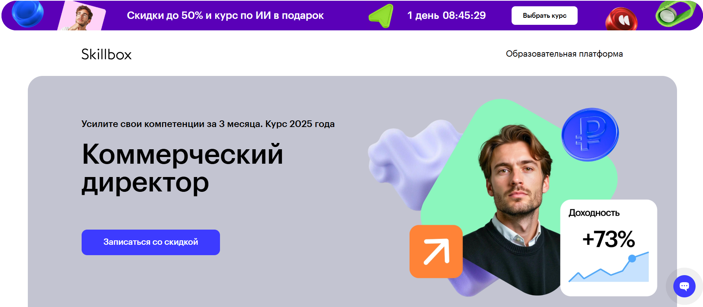- ✅ Официальный сайт: skillbox.ru
- 💸 Цена обучения: от 106 150 ₽ со скидкой 40% (при рассрочке на 22 месяца).
- 💳 Рассрочка: от 4 825 ₽/мес первый платёж через 3 месяца, без процентов и переплат.
- 📚 Формат: дистанционный формат с видеолекциями, практическими заданиями, кейсами и обратной связью от кураторов.
- ⏳ Продолжительность: 3 месяца (96 часов теории и 396 часов практики).
- 📜 Документ: диплом о профессиональной переподготовке государственного образца.
- 📝 Трудоустройство: помощь в составлении резюме, консультации по трудоустройству, возможность вернуть деньги, если не найдёте работу.
- 🔷 Для кого подходит курс: предпринимателям, руководителям отделов продаж и маркетинга, директорам и менеджерам, желающим повысить квалификацию и освоить стратегическое управление бизнесом.
Особенности:
Программа ориентирована на развитие ключевых навыков стратегического управления и формирование профессиональных компетенций в сфере продаж, маркетинга и финансов. Обучение проходит в дистанционном формате, что позволяет совмещать обучение с работой и личными делами. Перед началом обучения проводится диагностика для выявления сильных сторон и точек роста. Курс включает изучение аспектов коммерческой стратегии, разработку стратегий продаж и финансовое планирование. Все материалы доступны онлайн, а обучение проводится под руководством опытных экспертов. После успешного завершения слушатели получают диплом установленного образца, подтверждающий квалификацию коммерческого директора.
Чему учатся студенты:
- Разрабатывать коммерческую стратегию компании
- Проводить анализ рынка и оценивать риски
- Управлять продажами и отделами маркетинга
- Формировать KPI и систему мотивации персонала
- Готовить финансовую стратегию и анализировать показатели эффективности
- Презентовать результаты и разрабатывать стратегию развития бизнеса
Преподаватели:
- Людмила Орлова — коммерческий директор с опытом более 12 лет.
- Дмитрий Бордин — инвестиционный директор, специалист по стратегическому планированию, 12+ лет опыта.
- Вадим Дозорцев — основатель проекта Customer Journey Club, эксперт по клиентским стратегиям и управлению маркетингом.
Преимущества:
- Дистанционные курсы с гибким графиком обучения
- Индивидуальный подход и диагностика профессиональных навыков
- Практические кейсы, основанные на реальных бизнес-ситуациях
- Доступ к учебным материалам и обновлениям даже после окончания курса
- Помощь в повышении квалификации и карьерном росте
- Сертификат государственного образца после успешного завершения программы
- Возможность совмещать обучение с работой благодаря удобному формату
Отзывы учеников:
Выпускники отмечают высокое качество преподавания, актуальные знания и возможность развить управленческие навыки. По отзывам студентов, обучение помогает повысить квалификацию, научиться разрабатывать эффективные стратегии и успешно применять их в работе. Более 90% выпускников удовлетворены результатами и готовы рекомендовать платформу.
Перейти на официальный сайт курса8. Финансовый директор — SF Education
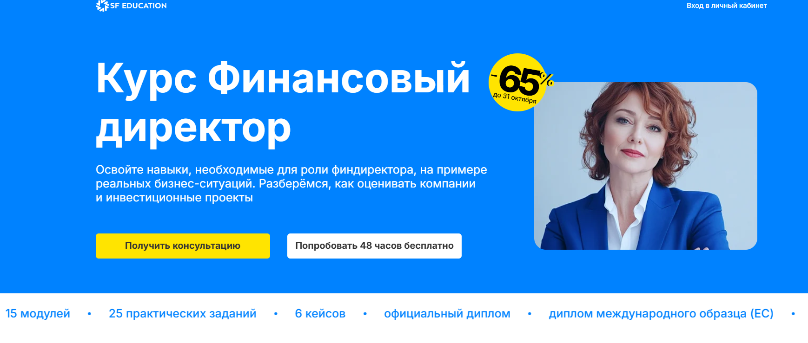- ✅ Официальный сайт: sf.education
- 💸 Цена: от 105 000 ₽ со скидкой до −65%.
- 💳 Рассрочка: от 5 833 ₽/мес на 18 месяцев без процентов, первый платёж через месяц.
- 📚 Формат: дистанционный формат — видеолекции, вебинары, практические задания, онлайн-тесты, кейсы, поддержка куратора и доступ к материалам навсегда.
- ⏳ Продолжительность: 6 месяцев (15 модулей, 320+ часов практики, 52 кейса).
- 📜 Документ: официальный диплом о профессиональной переподготовке и международный диплом ЕС.
- 📝 Трудоустройство: помощь карьерного центра, подготовка к собеседованиям и доступ к базе вакансий.
- 🔷 Для кого подходит курс: для действующих финансовых директоров, бухгалтеров, экономистов и специалистов, планирующих повышение квалификации и переход на управленческие позиции.
Особенности:
Программа создана для тех, кто хочет развить ключевые профессиональные навыки в области финансового менеджмента и стратегического планирования. Дистанционное обучение позволяет совмещать учёбу с работой, осваивая материалы в удобном формате. Курс охватывает ключевые аспекты корпоративных финансов, моделирования и анализа, помогает слушателям научиться эффективно управлять финансами компании и принимать обоснованные управленческие решения. Все материалы доступны онлайн, а преподаватели и кураторы сопровождают студентов до успешного завершения программы. Выпускники получают официальный и международный диплом, подтверждающий квалификацию. Обучение проводится с использованием современных образовательных технологий и практических кейсов. После окончания курса участники смогут применять изученные методы эффективного управления в реальных проектах и повысить профессиональную квалификацию.
Чему учатся студенты:
- Оценке инвестиционных проектов и анализу финансовых показателей
- Разработке коммерческой стратегии и управлению финансовыми рисками
- Финансовому моделированию, прогнозированию выручки и затрат
- Планированию бюджета и контролю денежных потоков
- Разработке стратегий повышения эффективности бизнеса
- Работе с Excel, Power BI, SQL и инструментами анализа данных
- Подготовке управленческой и международной отчётности (МСФО)
Преподаватели:
- Алексей Громов — инвестиционный аналитик, более 10 лет опыта в корпоративных финансах
- Марина Орлова — финансовый директор в IT-компании, эксперт по стратегическому менеджменту
- Илья Козлов — консультант по финансовому моделированию, член FMI
- Анна Левина — руководитель департамента финансового анализа, преподаватель программ Mini-MBA
- Дмитрий Соколов — эксперт по корпоративным финансам и инвестиционным проектам
Преимущества:
- 80% практики и реальные бизнес-кейсы в каждом модуле
- Доступ к материалам и обновлениям курса навсегда
- Индивидуальное сопровождение куратором и экспертами
- Международная аккредитация Financial Modeling Institute (FMI)
- Карьерный центр с поддержкой трудоустройства
- Гибкий график обучения, подходящий для занятых специалистов
- Портфолио проектов и диплом установленного образца
- Возможность получить налоговый вычет до 13% и рассрочку без переплат
Отзывы учеников:
Студенты отмечают высокий уровень преподавателей и практическую направленность программы. Среди плюсов чаще всего упоминают удобный дистанционный формат, возможность совмещать обучение с работой, поддержку кураторов и доступ к материалам после окончания курса. Многие выпускники подтверждают карьерный рост и повышение дохода после прохождения обучения.
Перейти на официальный сайт курса9. Директор по экономике и финансам — Академия Eduson
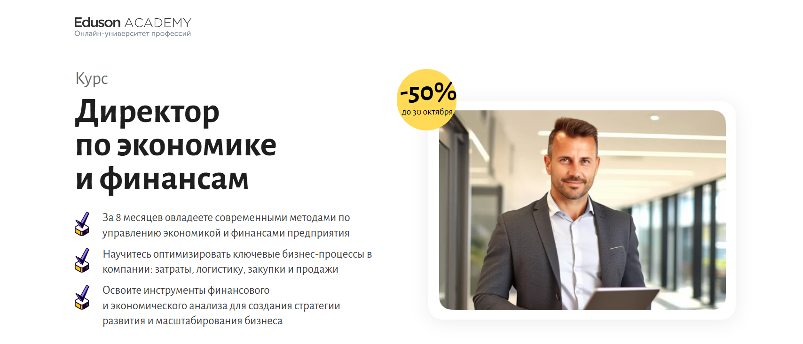- ✅ Официальный сайт: eduson.academy
- 💸 Цена обучения: от 163 000 ₽ со скидкой 50%.
- 💳 Рассрочка: беспроцентная рассрочка на 12 месяцев от 13 583 ₽/мес, возможность оплаты поэтапно или по счёту от юрлица.
- 📚 Формат: дистанционный формат с видеолекциями, практическими заданиями, тренажёрами, шаблонами и итоговой аттестацией. Материалы доступны онлайн в удобное время.
- ⏳ Продолжительность: 8 месяцев при нагрузке 8–10 часов в неделю.
- 📜 Документ: диплом о профессиональной переподготовке установленного образца и удостоверение о повышении квалификации.
- 📝 Трудоустройство: курс помогает повысить квалификацию и подготовиться к управленческим должностям в сфере финансов и экономики.
- 🔷 Для кого подходит курс: для собственников бизнеса, директоров, главных бухгалтеров, экономистов и специалистов, стремящихся к профессиональному росту.
Особенности:
Программа разработана для управленцев, желающих освоить современные методы финансового планирования и стратегического развития бизнеса. Обучение проходит в дистанционном формате, что позволяет совмещать обучение с работой. Студенты осваивают ключевые аспекты управления экономикой предприятия, изучают финансовое моделирование, анализ затрат, логистику и стратегию продаж. Дистанционное обучение сопровождается практическими кейсами и консультациями преподавателей. После успешного завершения курса слушатели получают официальный диплом, подтверждающий квалификацию. Гибкий график обучения и удобный онлайн-доступ делают процесс освоения программы комфортным и результативным.
Чему учатся студенты:
- Разрабатывать финансовую стратегию и управлять рисками
- Оптимизировать расходы, закупки и логистику
- Проводить финансовый и экономический анализ
- Разрабатывать коммерческую стратегию и стратегию маркетинга
- Оценивать инвестиционные проекты и управлять дебиторской задолженностью
- Формировать стратегию развития компании и контролировать ключевые показатели эффективности
Преподаватели:
- Азиза Улугова — преподаватель НИУ ВШЭ, заместитель финансового директора крупного холдинга, 7+ лет опыта.
- Виталий Полехин — президент Международной организации инвесторов INVESTORO, член правления Европейской ассоциации бизнес-ангелов.
- Руслан Голованов — директор департамента МСФО холдинга «КорпЭстейт», член ACCA (Великобритания).
- Камил Алекперов — руководитель подразделения финансового анализа Avon, опыт в Deloitte и Nestlé, 10+ лет в финансах.
- Виктор Коданев — профессор практики ВШБ НИУ ВШЭ, входит в ТОП директоров по закупкам России.
- Ицхак Адизес — преподаватель Стэнфорда и Колумбийского университетов, основатель Института Адизеса, консультант Coca-Cola и Volvo.
Преимущества:
- Современные дистанционные форматы обучения с обратной связью от экспертов
- Практические кейсы и тренажёры по управлению экономикой и финансами
- Гибкий график и возможность совмещать обучение с работой
- Диплом установленного образца о профессиональной переподготовке
- Программа актуальна на 2026 год и соответствует профессиональным стандартам
- Индивидуальное сопровождение кураторов и консультации преподавателей
- Материалы доступны онлайн без ограничений по времени
- Реальные бизнес-кейсы для закрепления практических навыков
Отзывы учеников:
Выпускники отмечают удобный формат дистанционного обучения, насыщенную программу и высокий профессиональный уровень преподавателей. Многие упоминают, что курс помог систематизировать знания, повысить квалификацию и получить повышение. Отдельно выделяют возможность совмещать обучение с работой и практическую направленность заданий, которые применяются в реальных бизнес-процессах.
Перейти на официальный сайт курса10. Директор по финансам (CFO, Chief Financial Officer) — City Business School
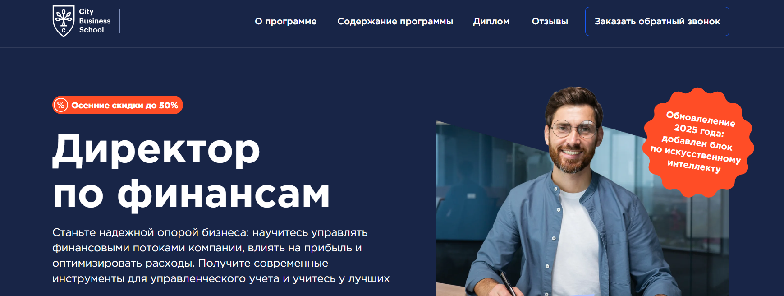- ✅ Официальный сайт: lp.e-mba.ru
- 💸 Цена: от 58 000 ₽ до 98 000 ₽ в зависимости от выбранного пакета.
- 💳 Рассрочка: до 24 месяцев, от 2 417 ₽ в месяц без переплат.
- 📚 Формат: дистанционный формат обучения — видеолекции, практикумы, кейсы, тесты и задания. Материалы доступны онлайн 24/7.
- ⏳ Продолжительность: 4–6 месяцев, в зависимости от тарифа.
- 📜 Документ: диплом о профессиональной переподготовке или удостоверение о повышении квалификации международного образца.
- 📝 Трудоустройство: выпускники получают профессиональные навыки, востребованные на рынке, и повышают шансы на должность коммерческого или финансового директора.
- 🔷 Для кого подходит курс: для финансовых специалистов, руководителей отделов, собственников бизнеса и управленцев, стремящихся повысить квалификацию и освоить ключевые аспекты финансового управления.
Особенности:
Программа направлена на развитие ключевых управленческих и профессиональных навыков, которые помогут эффективно управлять финансовыми потоками компании. Обучение проходит в удобном формате с гибким графиком, что позволяет совмещать обучение с работой. Дистанционные образовательные технологии дают возможность изучать актуальные данные и использовать современные методы анализа. Программа включает изучение стратегического планирования, финансового моделирования, управления рисками и разработки эффективных стратегий. Студенты осваивают методы повышения эффективности бизнеса, а также учатся применять знания в реальных кейсах. После завершения курса слушатели получают официальный диплом, подтверждающий квалификацию международного уровня.
Чему учатся студенты:
- Разрабатывать и реализовывать стратегию развития компании
- Управлять продажами, инвестициями и финансовыми потоками
- Анализировать финансовые показатели и оценивать эффективность проектов
- Создавать управленческие отчеты и дашборды
- Использовать инструменты стратегического планирования и бюджетного контроля
- Развивать управленческие компетенции и навыки стратегического мышления
Преподаватели:
- Александр Егоров — финансовый директор, консультант по финансированию, кандидат социологических наук.
- Анастасия Воробьева — бизнес-партнер по финансам ЗАО «Национальная Медиа Группа», эксперт в инвестициях и администрировании.
- Алексей Гаврисин — финансовый директор компании «Эрманн», эксперт по финансовому менеджменту.
- Ирина Гриднева — эксперт по бизнес- и финансовой стратегии, планированию и прогнозированию.
- Вадим Кукузей — заместитель генерального директора по экономике ООО «Окуловская бумажная фабрика».
- Юлия Новицкая — бизнес-тренер, налоговый консультант, профессиональный бухгалтер.
Преимущества:
- Современные дистанционные форматы обучения с гибким графиком
- Международный диплом, признаваемый работодателями в России и за рубежом
- Практико-ориентированная программа с реальными кейсами и практическими заданиями
- Доступ в закрытое сообщество выпускников и экспертов City Business School
- Возможность совмещать обучение с профессиональной деятельностью
- Развитие навыков стратегического и финансового управления
- Обновленная программа с модулем по искусственному интеллекту в финансах
Отзывы учеников:
Студенты отмечают практическую направленность программы, высокий уровень преподавателей и доступный формат обучения. Многие подчеркивают удобство дистанционного формата, наличие реальных кейсов и поддержку кураторов. По отзывам, курс помогает повысить квалификацию, развить навыки стратегического планирования и получить повышение в должности после окончания обучения.
Перейти на официальный сайт курса11. Финансовый директор – Нетология

- ✅ Официальный сайт: netology.ru
- 💸 Цена обучения: 121 900 ₽ со скидкой 40%.
- 💳 Рассрочка: от 3 563 ₽ в месяц без переплат.
- 📚 Формат: дистанционный формат — видеолекции, воркшопы, практические задания и менторские сессии.
- ⏳ Продолжительность: 4 месяца (5 ноября — 20 марта).
- 📜 Документ: удостоверение о повышении квалификации установленного образца.
- 📝 Трудоустройство: выпускники получают поддержку в карьерном росте и доступ к профессиональному сообществу управленцев.
- 🔷 Для кого подходит курс: для финансистов, бухгалтеров, руководителей отделов и специалистов, желающих повысить квалификацию и развить управленческие компетенции.
Особенности:
Программа обучения ориентирована на развитие ключевых профессиональных навыков финансового управления и стратегического планирования. Обучение проводится в дистанционном формате, что позволяет совмещать обучение с работой. Студенты изучают аспекты коммерческой деятельности, методы анализа финансовых показателей и разработку эффективных стратегий роста прибыли. Каждый участник работает над практическими кейсами и формирует коммерческую стратегию компании под руководством опытных менторов. Форматы обучения включают индивидуальные консультации, обсуждение кейсов и практику на примере реальных компаний. Материалы доступны онлайн в любое время, что обеспечивает удобный формат для успешного прохождения курса.
Чему учатся студенты:
- Анализу финансовых отчетов и построению прогнозов для бизнеса
- Разработке коммерческих стратегий и стратегии маркетинга
- Планированию бюджета и управлению ключевыми показателями эффективности
- Построению финансовой структуры компании и оптимизации процессов
- Использованию Power BI и других инструментов анализа данных
- Управлению командой и распределению финансовых задач
- Оценке бизнеса и внедрению методов повышения эффективности
Преподаватели:
- Дарья Грачёва — Финансовый директор «Нескучные финансы», кандидат экономических наук, 12 лет опыта в экономике и финансах.
- Инна Шкилева — Финансовый директор, кандидат экономических наук, более 20 лет опыта, 15 из них — на управленческих позициях.
- Борис Розентул — Финансовый директор «Лига-Холдинг», кандидат физико-математических и экономических наук.
- Юлия Беляева — Финансовый директор группы компаний «Интертек Рус», 20 лет опыта в управлении финансами.
- Светлана Гаврилова — Партнёр Genome Capital, преподаватель ВШЭ, эксперт в области венчурных инвестиций и аудита.
Преимущества:
- Современные дистанционные образовательные технологии
- Практические задания на основе реальных бизнес-кейсов
- Менторская поддержка от опытных финансовых директоров
- Возможность совмещать обучение с работой благодаря гибкому графику
- Получение документа о повышении квалификации установленного образца
- Доступ к материалам и обновлениям в течение двух лет после окончания обучения
- Участие в профессиональном сообществе выпускников и экспертов
- Скидка 40% при оплате до конца акции
Отзывы учеников:
Студенты отмечают высокий уровень преподавателей, актуальность теоретического и практического материала, удобный формат обучения и возможность применять знания сразу в работе. Многие выпускники подчеркивают, что курс помогает повысить квалификацию, систематизировать знания и уверенно претендовать на управленческие должности в сфере финансов.
Перейти на официальный сайт курса12. Коммерческий директор — Институт профессионального образования (ИПО)
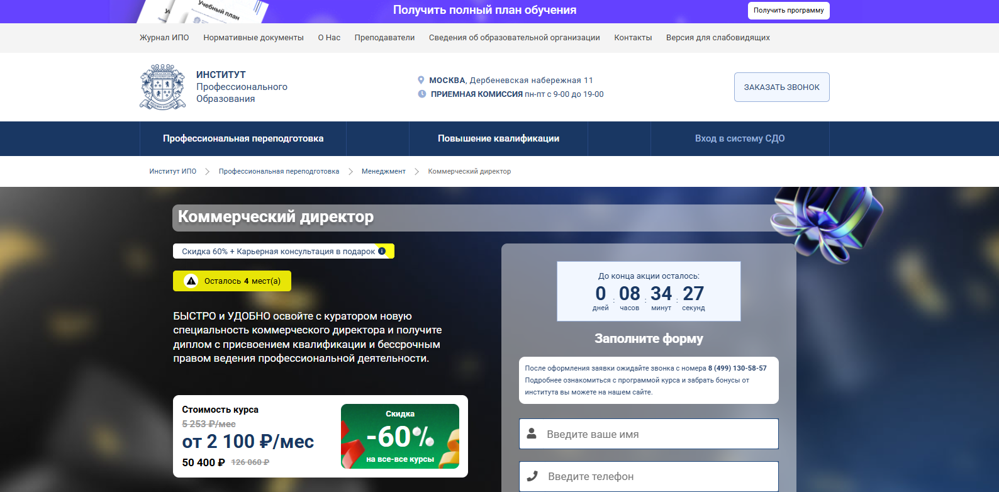- ✅ Официальный сайт: ipo.msk.ru
- 💸 Цена обучения: от 50 400 ₽ (со скидкой 60%, полная стоимость 126 060 ₽).
- 💳 Рассрочка: от 2 100 ₽/мес до 36 месяцев, возможна беспроцентная рассрочка от института и партнеров.
- 📚 Формат: дистанционный формат, видеоуроки, домашние задания, тесты, живые вебинары и консультации с кураторами.
- ⏳ Продолжительность: до 8 месяцев (676 часов).
- 📜 Документ: диплом о профессиональной переподготовке государственного образца.
- 📝 Трудоустройство: помощь Центра развития карьеры, карьерная консультация в подарок.
- 🔷 Для кого подходит курс: для специалистов с высшим или средним профессиональным образованием, руководителей отделов, менеджеров и тех, кто планирует карьерный рост в сфере продаж и управления.
Особенности:
Программа обучает слушателей стратегическому планированию и разработке эффективных стратегий в коммерческом блоке компании. Обучение проводится в дистанционном формате с поддержкой куратора, что позволяет совмещать обучение с работой. Все материалы доступны онлайн, а график обучения гибкий и подстраивается под личный ритм студента. После успешного прохождения курсов выдается официальный диплом, подтверждающий квалификацию. Программа включает практические задания и вебинары, направленные на развитие ключевых навыков управления продажами, маркетинга и персонала. Образовательные платформы института обеспечивают доступ к современным методикам и материалам для освоения профессии коммерческого директора. Благодаря дистанционному обучению студенты получают возможность изучать аспекты коммерческой деятельности без отрыва от работы и повышать квалификацию в удобном формате.
Чему учатся студенты:
- Разрабатывать стратегию маркетинга и стратегии продаж;
- Управлять продажами и ключевыми клиентами;
- Проводить анализ финансовых показателей и планирование бюджета;
- Разрабатывать коммерческую стратегию и управлять эффективностью бизнеса;
- Организовывать работу отделов маркетинга и продаж;
- Формировать управленческие компетенции и мотивацию персонала;
- Применять методы повышения эффективности в сфере бизнеса.
Преподаватели:
- Ульянкин Олег Валерьевич — кандидат экономических наук.
- Смагина Виктория Игоревна — кандидат экономических наук.
- Ветрова Екатерина Александровна — кандидат экономических наук.
- Морозов Сергей Александрович — практик, директор компании.
- Моторин Дмитрий Викторович — бизнес-тренер.
- Борисов Александр Николаевич — бизнес-тренер, консультант.
- Кузнецова Татьяна Викторовна — бизнес-тренер.
- Михновец Дарья Александровна — психолог, бизнес-тренер.
- Шакаров Михаил Русланович — бизнес-тренер.
- Назаров Алексей Игоревич — эксперт по управлению системой продаж.
- Третьякова Оксана Владимировна — основатель консалтингового агентства «Образование в России».
Преимущества:
- Дистанционное обучение, позволяющее совмещать учебу с работой;
- Доступ к библиотеке ЮРАЙТ и базе знаний института;
- Постоянная поддержка куратора и обратная связь от преподавателей;
- Карьерная консультация и помощь в трудоустройстве;
- Гибкий график обучения и возможность ускоренного прохождения программы;
- Все документы вносятся в ФИС-ФРДО и соответствуют требованиям Министерства образования РФ;
- Доступ к материалам после завершения обучения;
- Высокий рейтинг института (4,8 по данным Яндекс, 2GIS, Otzovik.com, IRecommend и yell.ru).
Отзывы учеников:
Выпускники отмечают удобный формат дистанционного обучения, профессионализм преподавателей и актуальность программы. Особенно ценят возможность совмещать обучение с работой и получать практические навыки, которые сразу применимы в реальной деятельности. Многие подчеркивают, что благодаря поддержке кураторов и практическим заданиям повысили свою квалификацию и нашли новые возможности для карьерного роста.
Перейти на официальный сайт курса13. Профессиональная переподготовка на коммерческого директора — Учебный центр «НЦПО»
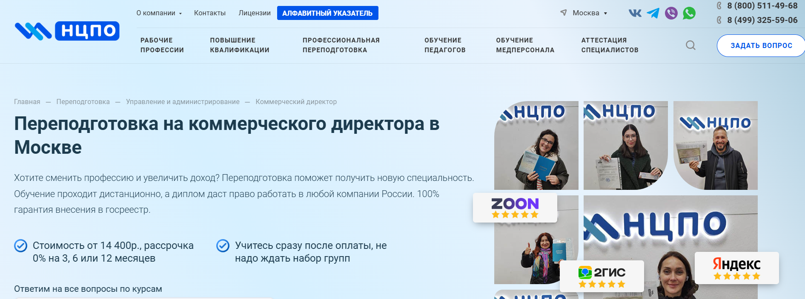- ✅ Официальный сайт: ncpo.ru
- 💸 Цена: от 14 400 ₽ (при оплате в день обращения).
- 💳 Рассрочка: 0% на 3, 6 или 12 месяцев, ежемесячный платеж от 1 200 ₽.
- 📚 Формат: дистанционный формат с лекциями, тестами, практическими заданиями и круглосуточным доступом к образовательным платформам. Материалы доступны онлайн сразу после оплаты.
- ⏳ Продолжительность: от 250 до 1000 академических часов.
- 📜 Документ: диплом о профессиональной переподготовке государственного образца с внесением в ФРДО.
- 📝 Трудоустройство: выпускники получают официальное подтверждение квалификации для работы коммерческим директором.
- 🔷 Для кого подходит курс: для менеджеров, маркетологов, экономистов, предпринимателей и руководителей отделов, желающих повысить квалификацию и развить управленческие навыки.
Особенности:
Обучение проходит с использованием дистанционных образовательных технологий, что позволяет совмещать обучение с основной работой. Форматы обучения включают интерактивные лекции, практические задания и тестирование. Студенты осваивают аспекты коммерческой деятельности, разрабатывают коммерческую стратегию и методы эффективного управления продажами. Программа помогает приобрести ключевые навыки стратегического планирования, финансового анализа и построения эффективных команд. По завершению курса слушатель получает официальный диплом, подтверждающий профессиональные компетенции и внесенный в государственный реестр. Дистанционное обучение дает возможность выбрать удобный график и темп прохождения программы, что способствует успешному завершению курса.
Чему учатся студенты:
- Разрабатывать стратегию маркетинга и стратегию продаж;
- Понимать ключевые аспекты коммерческой деятельности предприятия;
- Планировать и контролировать финансовое планирование компании;
- Управлять продажами и ключевыми клиентами;
- Формировать эффективные команды и мотивировать персонал;
- Анализировать финансовые результаты и оценивать эффективность бизнеса;
- Разрабатывать стратегию компании и управлять бизнес-процессами.
Преподаватели:
- Терешков Александр Леонидович — генеральный директор УЦ «НЦПО», специалист по стратегическому планированию и управлению бизнесом.
- Грезнева Диана — преподаватель, эксперт по маркетинговым стратегиям и разработке коммерческих решений.
- Малкова Анна — преподаватель, специалист по организации процессов продаж и управлению отделом маркетинга.
Преимущества:
- Обучение проводится дистанционно, материалы доступны онлайн 24/7.
- Можно совмещать обучение с работой благодаря гибкому графику.
- Курс соответствует профессиональным стандартам и современным требованиям рынка труда.
- По окончании обучения выдается диплом государственного образца с внесением в ФРДО.
- Стоимость обучения доступна, предусмотрена беспроцентная рассрочка.
- Курс помогает освоить ключевые навыки стратегического управления продажами и повысить квалификацию.
- Работа по официальному договору и наличие государственной лицензии гарантируют безопасность обучения.
- Учебные материалы и доступ к платформе остаются у слушателей навсегда.
Отзывы учеников:
По отзывам студентов, прошедших профессиональную переподготовку в «НЦПО», отмечается удобный формат дистанционного обучения, высокая квалификация преподавателей и практическая направленность программы. Многие выпускники отмечают, что обучение помогло повысить профессиональные навыки, улучшить понимание аспектов коммерческой деятельности и успешно применить полученные знания в работе.
Перейти на официальный сайт курса14. Директор по стратегическому развитию (620 часов) — АНО «НИИДПО»
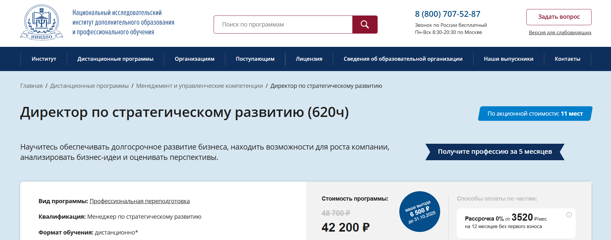- ✅ Официальный сайт: niidpo.ru
- 💸 Цена обучения: 48 700 ₽, акционная стоимость — 42 200 ₽ (скидка 13%).
- 💳 Рассрочка: 0% на 12 месяцев от 3520 ₽/мес без первого взноса. Возможна оплата через Яндекс PAY без комиссии.
- 📚 Формат: дистанционный формат с доступом к лекциям, вебинарам, практическим кейсам и тестам. Все материалы доступны онлайн.
- ⏳ Продолжительность: 23 недели (5,5 месяцев).
- 📜 Документ: диплом о профессиональной переподготовке с квалификацией «Менеджер по стратегическому развитию» и сертификат компетенций.
- 📝 Трудоустройство: выпускники могут работать директором по стратегическому развитию, коммерческим директором, стратегическим менеджером, Business Development Manager.
- 🔷 Для кого подходит курс: для специалистов, планирующих карьерный рост, желающих повысить квалификацию и освоить ключевые навыки стратегического планирования и управления бизнесом.
Особенности:
Программа ориентирована на освоение ключевых аспектов стратегического управления и формирование профессиональных навыков в области коммерческой стратегии. Обучение проводится полностью дистанционно, что позволяет совмещать обучение с работой и другими делами. Студенты изучают методы эффективного планирования, стратегические подходы к развитию бизнеса и инструменты анализа рыночных показателей. Формат курса построен на реальных кейсах и практических заданиях, что помогает закрепить знания на практике. Учебные материалы и лекции доступны онлайн в любое время, а обратная связь от преподавателей помогает успешно завершить обучение. После окончания курса слушатели получают диплом государственного образца, подтверждающий новую квалификацию.
Чему учатся студенты:
- Разрабатывать стратегию развития компании и управлять стратегическими проектами
- Анализировать внутренние и внешние факторы бизнеса
- Создавать эффективные коммерческие стратегии и стратегии маркетинга
- Оценивать финансовые показатели и эффективность бизнес-процессов
- Разрабатывать бизнес-планы и управлять изменениями в компании
- Формировать команду и управлять ключевыми клиентами
Преподаватели:
- Эксперты-практики АНО «НИИДПО»: кандидаты наук и действующие специалисты в области стратегического менеджмента и корпоративного развития.
Преимущества:
- Дистанционное обучение без необходимости посещения офлайн-занятий
- Удобный формат и гибкий график обучения
- Практические задания и кейсы, основанные на реальных примерах
- Доступ к вебинарам и лекциям после окончания курса
- Диплом государственного образца, признаваемый работодателями по всей России
- Возможность повысить квалификацию и получить востребованную профессию
- Постоянная поддержка преподавателей и кураторов
Отзывы учеников:
Студенты отмечают понятную подачу материала, удобный дистанционный формат и практическую направленность программы. Многие подчеркивают, что курс помогает освоить навыки стратегического планирования, повысить профессиональную квалификацию и уверенно применять полученные знания в работе. Высоко оценивается возможность совмещать обучение с основной деятельностью и доступность преподавателей для консультаций.
Перейти на официальный сайт курса15. Руководитель отдела продаж — Академия Eduson
- ✅ Официальный сайт: eduson.academy
- 💸 Цена: от 70 000 ₽, действует скидка 60%.
- 💳 Рассрочка: доступна на 12 месяцев без переплаты от 5 833 ₽/мес.
- 📚 Формат: дистанционный формат обучения — видеолекции, домашние задания, тренажёры, интервью с экспертами, индивидуальная консультация и тесты.
- ⏳ Продолжительность: 3 месяца.
- 📜 Документ: удостоверение о повышении квалификации установленного образца.
- 📝 Трудоустройство: выпускники получают официальный диплом и могут претендовать на должность коммерческого директора или руководителя отдела продаж.
- 🔷 Для кого подходит курс: для менеджеров среднего звена, предпринимателей, руководителей отделов продаж и специалистов, желающих повысить профессиональную квалификацию и развить управленческие навыки.
Особенности:
Программа направлена на развитие ключевых навыков стратегического управления и повышение квалификации руководителей. Обучение проводится в дистанционном формате, что позволяет совмещать обучение с работой. Студенты изучают аспекты коммерческой стратегии, разработку стратегий продаж и методы эффективного управления командой. Материалы курса доступны онлайн и включают практические кейсы, тренажёры и бизнес-задания. По завершению обучения участники получают профессиональные навыки анализа финансовых показателей, планирования и реализации коммерческой стратегии компании. Дистанционные образовательные форматы обеспечивают удобный график обучения и доступ к актуальным знаниям.
Чему учатся студенты:
- Осваивать методы эффективного управления продажами и стратегическое планирование
- Разрабатывать стратегию маркетинга и коммерческую стратегию компании
- Управлять отделом продаж и повышать эффективность бизнеса
- Проводить анализ финансовых показателей и контролировать процессы продаж
- Мотивировать сотрудников и строить эффективные команды
- Использовать инструменты стратегического менеджмента и методы повышения прибыли
Преподаватели:
- Елена Масолова — основатель Groupon Russia, входит в топ-30 интернет-предпринимателей Forbes, главный методолог курса.
- Джон Стёртэвант — преподаватель Harvard Business School.
- Артемий Гершвальд — эксперт в области построения отделов продаж и стартапов.
- Евгений Орлан — бизнес-тренер, основатель Школы системных продаж «Атланты Бизнеса», экс-директор Groupon.
- Чарльз Крэйвер — профессор Университета Джорджа Вашингтона.
- Леонид Осокин — генеральный директор Osokin-Consulting, среди клиентов — МТС, Газпромбанк, Лукойл, Coca-Cola.
- Максим Поташев — глава RP Consulting, магистр игры «Что? Где? Когда?».
Преимущества:
- Дистанционное обучение в удобном формате с возможностью совмещать обучение с работой
- Материалы курса доступны онлайн навсегда
- По окончании курса выдается официальный документ установленного образца
- Курс включает разработку эффективных стратегий и обучение ключевым аспектам управления
- Практические задания помогают закрепить профессиональные навыки
- Поддержка кураторов и обратная связь от опытных экспертов
- Гибкий график обучения и возможность повысить профессиональную квалификацию
- Обучение проходит по современным образовательным программам и стандартам
Отзывы учеников:
Слушатели отмечают удобный дистанционный формат, практическую направленность курса и высокий уровень преподавателей. По отзывам студентов, обучение помогает развить управленческие компетенции, научиться стратегическому планированию и повысить эффективность отдела продаж. Многие отмечают, что материалы доступны онлайн и позволяют совмещать обучение с профессиональной деятельностью.
Перейти на официальный сайт курса16. Курс для топ-менеджеров — SF Education
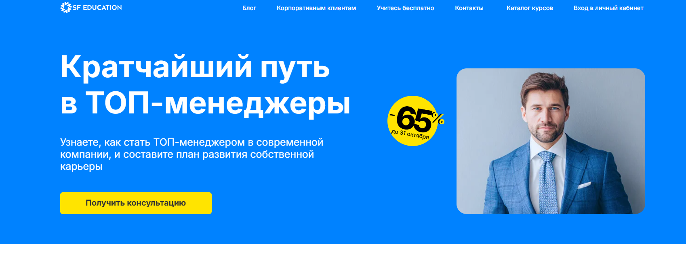- ✅ Официальный сайт: sf.education
- 💸 Цена: от 8 076 ₽ (скидка до 65%)
- 💳 Рассрочка: беспроцентная на 12 месяцев от 673 ₽/мес, первый взнос через месяц
- 📚 Формат: дистанционный формат обучения, видеолекции, практические задания, тесты и рабочая тетрадь
- ⏳ Продолжительность: 1 месяц (3 модуля, 6+ часов практики)
- 📜 Документ: сертификат о профессиональной переподготовке установленного образца
- 📝 Трудоустройство: выпускники повышают квалификацию и занимают управленческие должности
- 🔷 Для кого подходит курс: руководителям, предпринимателям, менеджерам среднего звена и специалистам, планирующим карьерный рост
Особенности:
Программа сочетает дистанционное обучение с практическими кейсами, что позволяет совмещать обучение с работой. Участники изучают аспекты коммерческой стратегии, методы эффективных продаж и стратегическое планирование. В процессе обучения осваиваются ключевые навыки стратегического и финансового менеджмента, навыки управления персоналом и командой. Материалы курса доступны онлайн, что обеспечивает удобный формат обучения. По завершению курса слушатели получают официальный документ, подтверждающий квалификацию. Программа обучения включает изучение современных подходов к управлению, разработке стратегии маркетинга и повышению эффективности бизнеса. Все участники получают постоянный доступ к обновлениям и дополнительным материалам для профессионального роста.
Чему учатся студенты:
- Разрабатывать эффективные стратегии развития бизнеса
- Анализировать финансовые показатели компании
- Применять методы стратегического планирования
- Управлять продажами и коммерческими проектами
- Мотивировать команду и повышать эффективность работы сотрудников
- Формировать стратегии маркетинга и взаимодействовать с ключевыми клиентами
Преподаватели:
- Влас Лёзин — Вице-президент банка Goldman Sachs, Wells Fargo; операционный директор Silicon Valley Innovation Center (США), эксперт в области стратегического и финансового менеджмента
Преимущества:
- Дистанционный формат обучения с гибким графиком
- Доступ к курсу и обновлениям остаётся навсегда
- Практические задания по анализу финансовых показателей и коммерческой стратегии
- Курс ведёт эксперт с международным опытом в сфере бизнеса
- Возможность совмещать обучение с работой и другими проектами
- Сертификат о профессиональной переподготовке установленного образца
- Программа соответствует современным образовательным стандартам
- Доступны консультации и обратная связь от кураторов
Отзывы учеников:
Студенты SF Education отмечают удобный дистанционный формат, насыщенные практические задания и доступность преподавателей. Чаще всего хвалят структурированные материалы, возможность совмещать обучение с работой и получение актуальных навыков стратегического управления и финансового планирования.
Перейти на официальный сайт курсаБесплатные курсы по обучению на Коммерческого директора
Бесплатный мини-курс «Профессия Коммерческий директор» – Eduson Academy
✅ Официальный сайт: free.eduson.academyОписание и особенности:
- Дистанционный формат обучения позволяет совмещать работу и учебу без отрыва от основной деятельности.
- За 2 часа 32 минуты слушатели освоят ключевые аспекты коммерческой стратегии и узнают, как управлять продажами и корпоративными финансами.
- Курс включает интерактивные лекции и практические задания, направленные на развитие профессиональных навыков стратегического планирования и управления.
- Участники изучат методы эффективного ведения бизнеса, стратегию маркетинга и разработку KPI в отделах продаж.
- Материалы доступны онлайн, обучение проводится на современной образовательной платформе с удобным графиком обучения.
- Слушатели научатся анализу финансовых показателей, созданию отдела продаж и формированию стратегии развития компании.
- Преподаватели — эксперты-практики с более чем 10-летним опытом в управлении, маркетинге и стратегическом менеджменте.
- По завершении курса участники смогут повысить квалификацию и применить полученные знания для успешного развития бизнеса.
- Демо-доступ предоставляется бесплатно на 3 дня, что позволяет пройти обучение в удобном формате и оценить качество программы.
Финансовый менеджмент: увеличиваем прибыль и получаем премию – Skillbox
✅ Официальный сайт: intensive.skillbox.ruОписание и особенности:
- Бесплатный интенсив в дистанционном формате поможет освоить ключевые аспекты финансового планирования и управления прибылью компании.
- Слушатели узнают, как анализировать финансовые показатели, определять прибыльность проектов и повышать эффективность бизнеса.
- Обучение проводится онлайн, что позволяет совмещать обучение с работой и проходить занятия в удобном формате.
- Программа включает практические задания и реальные кейсы по расчету маржи, валовой прибыли и оценке убыточности направлений.
- Участники изучат методы эффективного финансового анализа, разработку стратегий и внедрение систем учета.
- После успешного завершения курса слушатели смогут обосновывать премии и повышение зарплаты руководству на основе показателей эффективности.
- Курс подходит руководителям, финансистам, бухгалтерам и студентам, стремящимся повысить квалификацию и освоить новые профессиональные навыки.
- Материалы доступны онлайн — можно проходить обучение в любом темпе и с любым удобным графиком.
- Интенсив ведёт практикующий эксперт с 25-летним опытом в управлении корпоративными финансами и внедрении систем автоматизации.
- По итогам прохождения участники получают доступ к дополнительным материалам и рекомендациям по профессиональному росту.
Кто такой коммерческий директор (CCO)?
Коммерческий директор — это один из ключевых управленцев компании, отвечающий за стратегическое развитие продаж, увеличение прибыли и управление коммерческой деятельностью. Он является связующим звеном между отделами маркетинга, продаж, закупок и логистики. Главная цель коммерческого директора — рост дохода предприятия за счет эффективного построения коммерческих процессов.
Что делают коммерческие директора и чем занимаются?
Основная зона ответственности коммерческого директора охватывает все направления, связанные с продажами и развитием бизнеса. Это не просто руководитель отдела продаж, а стратег, формирующий финансовые и маркетинговые цели компании.
- Разработка и реализация коммерческой стратегии компании;
- Анализ рынка и конкурентов, прогнозирование продаж;
- Построение и управление отделом продаж;
- Формирование и контроль бюджета;
- Ведение переговоров с ключевыми клиентами и партнерами;
- Контроль выполнения KPI по доходности и маржинальности;
- Оптимизация бизнес-процессов и внедрение новых инструментов управления.
Что должен знать и уметь CCO?
Для успешного выполнения обязанностей коммерческий директор должен обладать не только управленческими качествами, но и глубокими знаниями в области экономики, маркетинга и психологии продаж.
- Понимание принципов стратегического планирования и бизнес-аналитики;
- Навыки построения эффективной команды продаж;
- Знание CRM-систем, цифровых инструментов и аналитических платформ;
- Умение выстраивать партнерские отношения и вести переговоры на уровне топ-менеджмента;
- Развитые лидерские качества и эмоциональный интеллект;
- Навыки финансового анализа и планирования.
Личные качества успешного коммерческого директора
Помимо профессиональных компетенций, важную роль играют личные качества. Именно они помогают удерживать команду и эффективно добиваться поставленных целей.
- Ответственность и стратегическое мышление;
- Решительность и стрессоустойчивость;
- Гибкость и умение быстро адаптироваться к изменениям рынка;
- Коммуникабельность и харизма;
- Высокий уровень самоорганизации и аналитический склад ума.
Востребованность и зарплаты коммерческих директоров (CCO) в России
Коммерческий директор остается одной из самых востребованных и высокооплачиваемых позиций на рынке труда России. По данным ведущих рекрутинговых агентств, спрос на опытных специалистов этого профиля вырос на 12% по сравнению с прошлым годом. Особенно востребованы коммерческие директора в IT, промышленности, ритейле и сфере услуг.
- Средняя зарплата в регионах России — от 250 000 до 400 000 рублей;
- В Москве и Санкт-Петербурге — от 400 000 до 800 000 рублей в месяц;
- На крупных предприятиях и в международных компаниях — до 1 200 000 рублей и выше.
Уровень дохода зависит от отрасли, опыта, масштабов компании и достигнутых финансовых результатов.
Как стать коммерческим директором и где учиться?
Стать коммерческим директором можно, имея управленческий и аналитический опыт, а также образование в области экономики или маркетинга. Обычно специалисты приходят к этой должности через карьерный рост: от менеджера по продажам до руководителя отдела, а затем — до топ-менеджера.
- Высшее образование по направлениям «Экономика», «Менеджмент», «Маркетинг», «Бизнес-администрирование»;
- Дополнительные программы MBA и Executive MBA;
- Курсы по стратегическому управлению, лидерству, бизнес-анализу и цифровому маркетингу;
- Повышение квалификации в ведущих российских вузах: ВШЭ, РАНХиГС, МГУ, СПбГУ.
Важно не только получить образование, но и развивать практические навыки управления, участвовать в проектах, связанных с продажами и развитием бизнеса.
Перспективы профессии CCO
В условиях цифровизации и роста конкуренции коммерческий директор становится центром принятия решений. Компании всё чаще ищут специалистов, способных совмещать традиционные управленческие навыки с цифровой экспертизой. В ближайшие годы на рынке появится всё больше вакансий с уклоном в data-driven управление продажами и развитие онлайн-каналов сбыта.
- Рост спроса на digital-компетенции и знание e-commerce;
- Возможность карьерного роста до генерального директора или CEO;
- Перспектива международной карьеры в крупных корпорациях;
- Развитие роли коммерческого директора как стратегического партнера бизнеса.
Что включает в себя обучение на коммерческого директора?
Обучение на коммерческого директора включает изучение аспектов коммерческой деятельности, разработку стратегий продаж и финансовое планирование. Программы обучения охватывают ключевые аспекты стратегического управления, работу с ключевыми клиентами, методы эффективного управления продажами и формирование коммерческой стратегии компании.
Какие ключевые навыки получает коммерческий директор после прохождения обучения?
После прохождения курсов коммерческий директор осваивает практические навыки ведения переговоров, разработку коммерческой стратегии, управление отделом продаж и отделом маркетинга. Он приобретает навыки стратегического планирования, управленческие компетенции и знания в сфере финансового менеджмента.
Кому подходят курсы на CCO?
Курсы подходят руководителям отделов продаж, маркетинга, менеджерам среднего звена и специалистам, стремящимся к профессиональному росту. Обучение рассчитано на тех, кто хочет повысить квалификацию и освоить современные методы стратегического управления.
В каком формате проводится обучение CCO?
Современные программы обучения реализуются в дистанционном формате. Это удобный формат, который позволяет совмещать обучение с работой. Материалы доступны онлайн на современных образовательных платформах, что обеспечивает гибкий график обучения.
Какие преимущества имеет дистанционное обучение коммерческого директора?
Дистанционные образовательные программы позволяют изучать ключевые аспекты коммерческой деятельности в любом удобном темпе. Материалы доступны онлайн 24/7, а учебный процесс поддерживается опытными преподавателями и кураторами. Такой формат идеально подходит для занятых руководителей.
Какие темы охватывает обучение на коммерческого директора?
Учебные программы включают разработку коммерческой стратегии, анализ финансовых показателей, методы эффективного управления и построение системы продаж. Также рассматриваются стратегии маркетинга, финансовое планирование и мотивация персонала.
Что такое профессиональная переподготовка по направлению «коммерческий директор»?
Профессиональная переподготовка — это дополнительная образовательная программа, которая дает возможность получить новую квалификацию. После успешного завершения обучения слушателю выдается диплом установленного образца, подтверждающий право занимать должность коммерческого директора.
Какие документы получают слушатели после окончания обучения?
После окончания курса участники получают официальный диплом о профессиональной переподготовке или сертификат о повышении квалификации. Документ устанавливается государственными стандартами и признается работодателями в сфере бизнеса и управления продажами.
Какова стоимость обучения на CCO?
Стоимость обучения зависит от продолжительности программы и выбранного формата обучения. Многие образовательные платформы предлагают доступные цены, возможность оплатить обучение в рассрочку и даже пройти бесплатные вводные курсы.
Можно ли совмещать обучение с работой?
Да, совмещать обучение с работой можно благодаря дистанционному формату. Гибкий график обучения позволяет изучать учебные материалы в удобное время и проходить практические задания без отрыва от основной деятельности.
Сколько длится обучение на коммерческого директора?
Продолжительность курса зависит от программы. В среднем профессиональная переподготовка занимает от 3 до 6 месяцев. Сроки обучения определяются индивидуальным учебным планом и возможностью слушателя проходить обучение в удобном темпе.
Какие профессиональные навыки развивает обучение?
Программа помогает развить профессиональные навыки управления продажами, стратегического планирования и финансового анализа. Слушатели изучают методы повышения эффективности бизнеса, инструменты менеджмента и современные подходы к управлению командами.
Какие результаты ожидаются после завершения обучения?
После успешного прохождения курсов слушатели получают актуальные знания и практический опыт в области управления продажами и разработки коммерческой стратегии. Это позволяет повысить квалификацию, увеличить эффективность бизнеса и претендовать на высокие должности.
Какие онлайн-курсы коммерческого директора считаются лучшими?
Лучшие онлайн-курсы коммерческого директора (CCO) предлагают институты профессиональной переподготовки и академии бизнеса. Они используют современные образовательные технологии, реальные кейсы и методы эффективного обучения для развития управленческих компетенций.
Можно ли получить диплом международного образца?
Да, некоторые программы обучения коммерческого директора предоставляют возможность получить международный диплом. Это открывает путь к карьерному росту и работе в международных компаниях, а также подтверждает высокий уровень профессиональных навыков.
Как обучение помогает в разработке эффективных стратегий продаж?
В ходе программы слушатели изучают методы разработки эффективных стратегий продаж и коммерческой стратегии компании. Практические задания и реальные кейсы помогают научиться анализировать рынок, оценивать показатели эффективности и реализовывать коммерческие цели.
Какие перспективы карьеры после переподготовки?
После прохождения программы профессиональной переподготовки выпускники могут занимать управленческие должности — от руководителя отдела продаж до коммерческого директора. Также они способны разрабатывать стратегии развития бизнеса и управлять эффективностью компании.
Можно ли проходить обучение на CCO дистанционно из любого региона?
Да, дистанционные курсы коммерческого директора доступны онлайн из любого региона. Слушатели получают доступ к материалам, вебинарам и консультациям преподавателей через современные образовательные платформы, что обеспечивает удобный формат обучения.
Как происходит итоговая аттестация и получение диплома?
После завершения программы слушатели проходят итоговую аттестацию — тесты, проекты и защиту выпускной работы. После успешного завершения обучения выдается диплом государственного образца, подтверждающий новую профессиональную квалификацию.
Как обучение на комерческого директора помогает повысить эффективность бизнеса?
Обучение коммерческого директора направлено на повышение эффективности бизнеса за счет освоения современных методов управления, анализу финансовых результатов и развитию стратегического мышления. Выпускники умеют эффективно управлять продажами и повышать прибыль компании.
------------------------------------------------
Реклама. Информация о рекламодателе по ссылкам в статье.